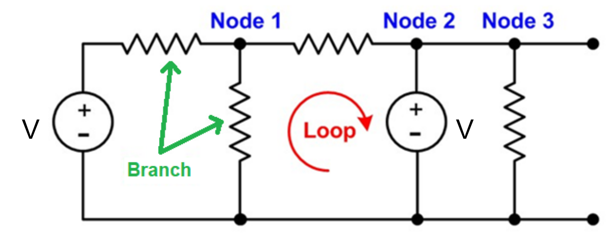
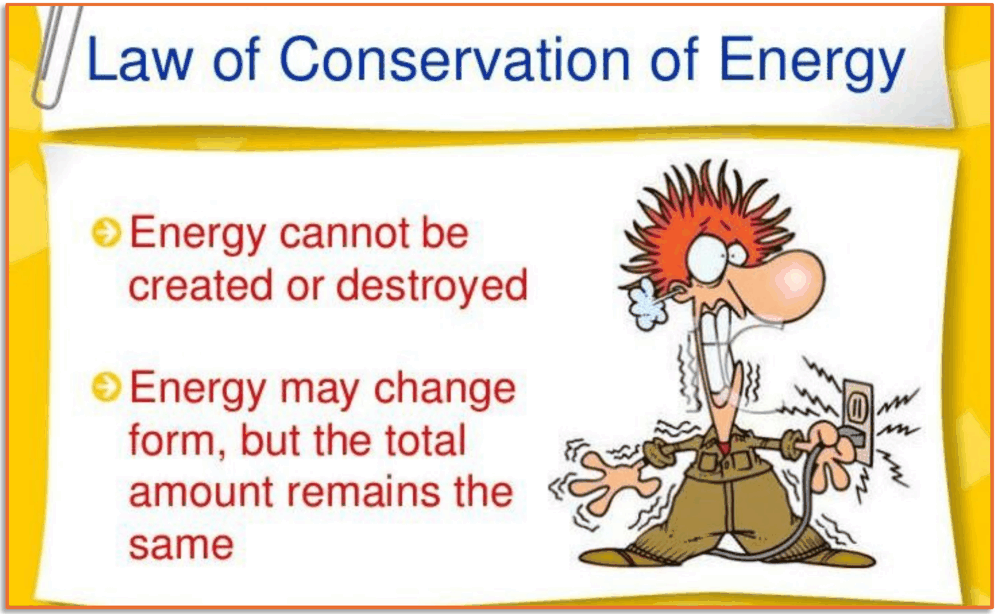
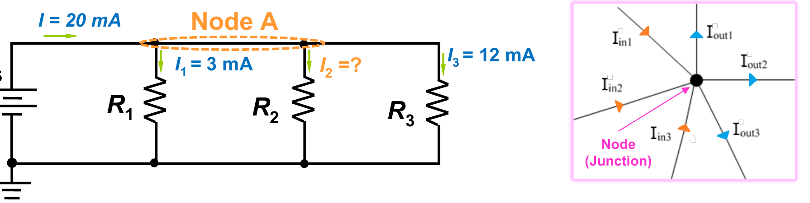
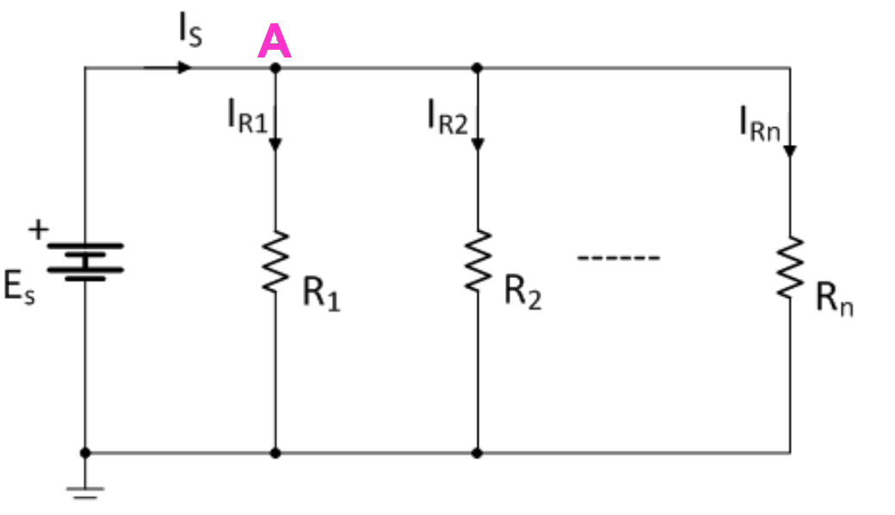
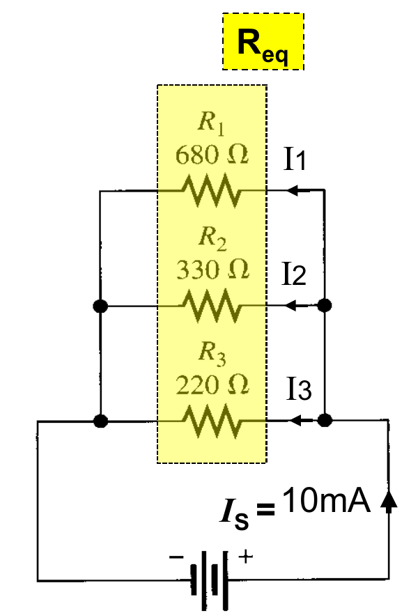
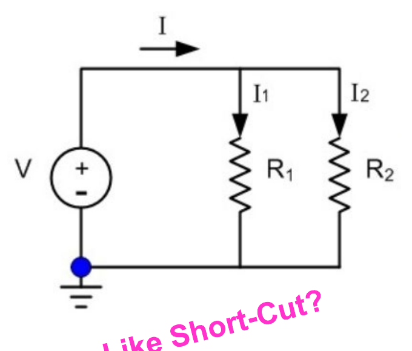
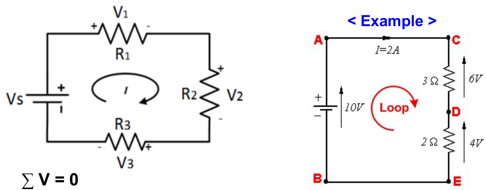
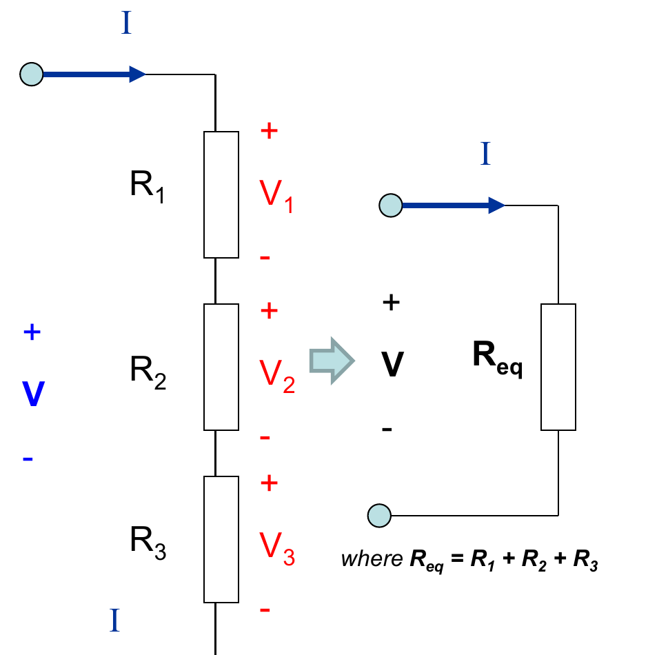
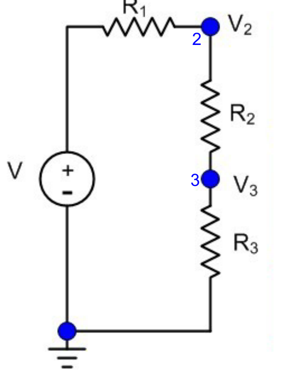
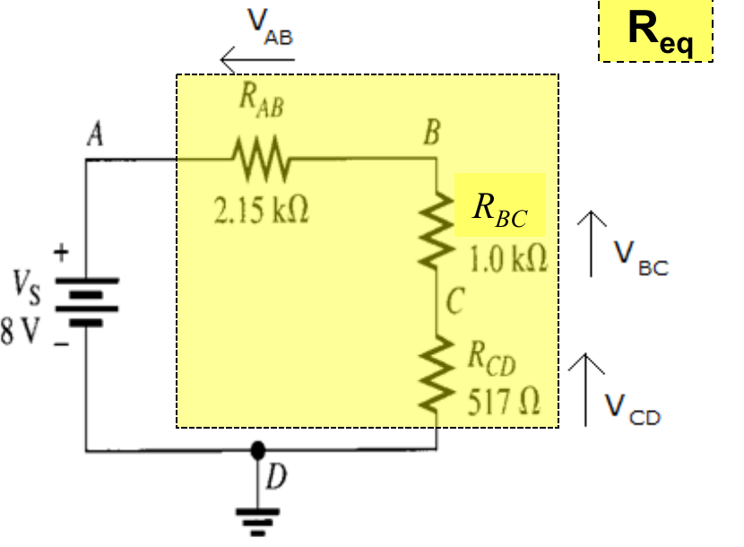

1. Nodes, branches and loops
An electric circuit is a set of components joined by wires so that current can flow. Before analysing one, you need three words that engineers use all the time.

- A node is a point where wires meet.
- A branch is a path between two nodes that holds a single component, such as a resistor or a battery.
- A loop is a closed path: you can start at one point, follow the wires and components, and arrive back where you began. Current can circulate around it.
In the circuit below, three nodes are marked. The wires with components between the nodes are branches, and the red arrow shows one loop.
2. Conservation of energy
Energy cannot be created or destroyed. It can change form, for example from electrical energy into heat or light, but the total amount stays the same.

Keep this idea in mind. It is the reason Kirchhoff's Voltage Law (lesson 7) works.
3. Kirchhoff's Current Law (KCL)
Kirchhoff's Current Law, also called his first law, is about what happens at a node. No charge is lost there, so the current flowing into a node must equal the current flowing out. This is the conservation of charge.

Iin1 + Iin2 + Iin3 + … = Iout1 + Iout2 + Iout3 + …
Worked example
A 20 mA current enters Node A and leaves through three resistors. R1 takes 3 mA, R3 takes 12 mA, and the current through R2 is unknown.
20 = 3 + I2 + 12
20 = I2 + 15
I2 = 5 mA
4. The current divider
In a parallel circuit, the source current IS splits between the branches. By KCL, the branch currents add up to the source current.

IS = IR1 + IR2 + … + IRn
The total (equivalent) resistance of the parallel network is:
Req = 1 / (1/R1 + 1/R2 + … + 1/Rn)
Every branch is connected across the same two points, so the voltage at node A, VA, is the same for all branches, even though the currents differ. Using Ohm's law, IR1 = VA / R1, and VA = IS × Req. Putting these together gives the current divider formula:
IRx = (Req / Rx) × IS
Here x is the branch number. A branch with a smaller resistance gets a bigger share of the current.
Watch out: some textbooks write RT instead of Req in this formula. In the current divider, RT still means the equivalent resistance of the parallel network. It is not the RT used in the voltage divider, which is the sum of resistors in series.
5. Current divider example
Three resistors are connected in parallel: R1 = 680 Ω, R2 = 330 Ω and R3 = 220 Ω. The source supplies IS = 10 mA. The total resistance works out to Req ≈ 111 Ω.

I1 = (111 / 680) × 10 mA = 1.63 mA
I2 = (111 / 330) × 10 mA = 3.36 mA
I3 = (111 / 220) × 10 mA = 5.05 mA
The smallest resistor, 220 Ω, carries the most current. The three currents add up to about 10 mA, the source current (the small difference comes from rounding).
6. Current divider shortcut for two branches
When a parallel circuit has exactly two branches, the formula simplifies. For two resistors, Req = R1R2 / (R1 + R2), and substituting that into the current divider formula gives:

I1 = I × R2 / (R1 + R2)
I2 = I × R1 / (R1 + R2)
Notice that each branch's current uses the other resistor on top. This is a convenient way to find the current through one resistor.
It only works for two parallel resistors. For a more complex circuit, simplify it two resistors at a time until the shortcut applies.
7. Kirchhoff's Voltage Law (KVL)
Kirchhoff's Voltage Law, his second law, is about loops. Add up all the voltages around any closed loop, counting rises and drops with their signs, and the total is zero. This follows from conservation of energy: energy given to charge by the source is used up by the components.

Another way to say it: in a loop, the sum of the voltage rises equals the sum of the voltage drops.
ΣV = 0
Vs − V1 − V2 − V3 = 0, or Vs = V1 + V2 + V3
Worked example
A 10 V battery drives 2 A around a loop containing a 3 Ω and a 2 Ω resistor. The drops are 3 × 2 = 6 V and 2 × 2 = 4 V. The drops add up to 6 + 4 = 10 V, exactly the battery voltage, so KVL holds.
8. The voltage divider
In a series circuit, the same current I flows through every resistor, and the total resistance is the sum: Req = R1 + R2 + R3. The supply voltage V is shared out between the resistors.

Using Ohm's law (V = IR):
I = V / Req
V1 = R1 × I = (R1 / Req) × V
The same reasoning works for any resistor, which gives the voltage divider formula:
Vx = (Rx / Req) × V
Here x stands for the name of any resistor in the series circuit, for example V1 = (R1 / Req) × V. A larger resistor gets a larger share of the voltage.
9. Voltage across one resistor
The voltage divider also helps when you want the voltage across a single resistor in the middle of a series circuit, such as R2 between R1 and R3. Call the voltage at the point between R1 and R2 V2, and the voltage at the point between R2 and R3 V3. These are measured against the bottom (ground) wire.

V2 = V × (R2 + R3) / (R1 + R2 + R3)
V3 = V × R3 / (R1 + R2 + R3)
The voltage across R2 is the difference, V23 = V2 − V3. Subtracting gives a direct formula:
V23 = V × R2 / (R1 + R2 + R3)
10. Voltage divider example
A battery of Vs = 8 V is connected to three resistors in series: RAB = 2.15 kΩ, RBC = 1.0 kΩ and RCD = 517 Ω. The total resistance is Req = 3.667 kΩ.

VAB = (2.15k / 3.667k) × 8 V = 4.69 V
VBC = (1k / 3.667k) × 8 V = 2.18 V
VCD = (517 / 3.667k) × 8 V = 1.13 V
Check with KVL: 4.69 + 2.18 + 1.13 = 8.00 V, the battery voltage.
11. Try it: divider simulator
Use the sliders to change the circuit and watch the divider formulas from lessons 4 to 10 at work. Nothing here is graded, so experiment freely.
The starting values are the examples from lessons 10 (series) and 5 (parallel). The parallel numbers can differ in the last digit from lesson 5, because the lesson rounds Req to 111 Ω and the simulator does not.
Things to try
- In series, make R2 much bigger. What happens to V2, and to the other two voltages?
- In parallel, make one resistor very small. Which branch takes most of the current?
- Look at the check line at the bottom. Does the total always match the supply?